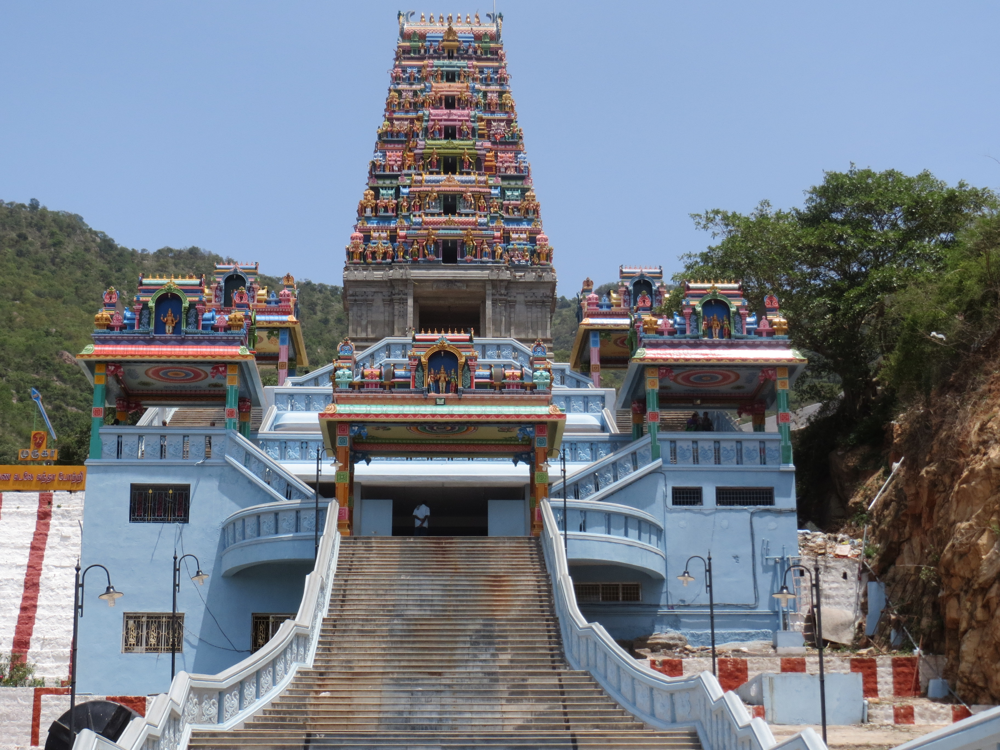

Maruthamalai Murugan Temple, also known as Arulmigu Subramaniyaswamy Temple, is a revered 12th-century hill temple located about 12 km northwest of Coimbatore...
🏛️ Historical & Spiritual Significance:
🔹 Dedicated to Lord Murugan, one of the six Arupadai Veedu.
🔹 Perched at 500 feet on the Western Ghats, offering scenic views.
🌟 Sacred Shrines & Rituals:
🔹 Houses the main deity Lord Murugan, with shrines for Pambatti Siddhar.
🔹 Features sacred Theerthams (holy springs) with medicinal properties.
🎉 Festivals & Celebrations:
🔹 Grand celebrations of Thai Poosam, Panguni Uthiram, Skanda Sashti.
🔹 Devotees take part in abhishekams, poojas, and processions.
🕰️ Temple Timings:
🔹 Open daily from 6:00 AM - 1:00 PM & 2:00 PM - 8:00 PM.
A must-visit spiritual destination for Murugan devotees!
